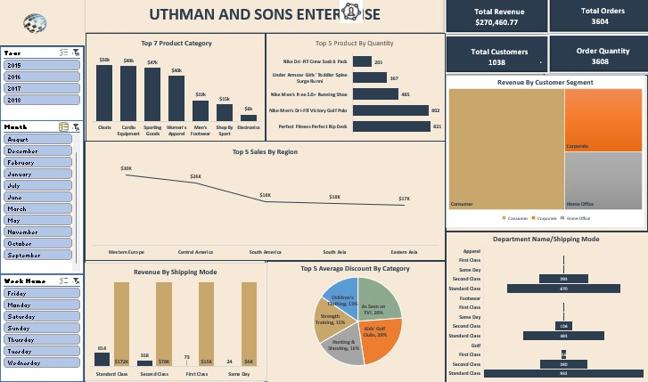
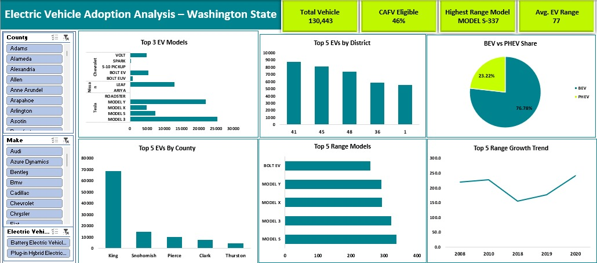
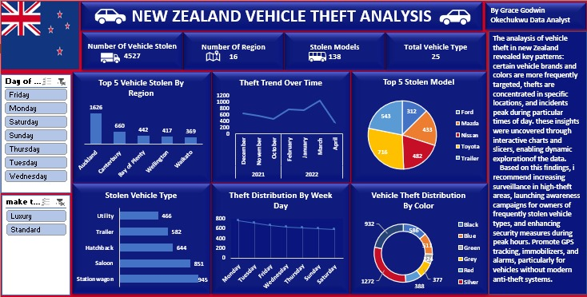

Projects
Here's a visual preview of some dashboards i've designed using power BI, SQL, Excel and Tableau. Every dataset tells a story, this project shows how i've transformed raw numbers into business-changing narratives.

NEW ZEALAND VEHICLE THEFT ANALYSIS
Excel dashboard and insight report on vehicle theft in new zealand. This project is a detailed analysis of vehicle theft patterns across new zealand using micro soft excel. It uncovers theft trends by region, vehicle type, color, and time of occurance to inform proactive strategies for crime reduction and public safety.
🔗view full Project
RETAIL SALES PERFORMANCE ANALYSIS
Retail sales performance analysis using excel, business insight and interactive dashboard. This presents an indepth analysis of a retail sales datasets to uncover patterns in customer behaviour, product performance, shipping efficience and regional revenue trends. leveraging microsoft excel design and interactive dashboard to visualize key business insight and provide actionable recommendation.
🔗view full Project
HOSPITAL PATIENT RECORDS ANALYSIS | SQL PROJECT
This SQL power case study dive deep into patient record from Lifecare Multispecialty Hospital, uncovering critical insight into treatment costs, admission trends, diagnosis frequencies,and departmental performance. By answering key business questions through structured queries and data analysis, the project exposes inefficiencies, highlights demographic patterns, and informs targeted improvements in care delivery and resource allocation.
🔗view full Project
ELECTRIC VEHICLE ADOPTION ANALYSIS | EXCEL PROJECT
This project presents a comprehensive analysis of electric vehicle (EV) adoption across washington state using real registration data. It explores EV distribution patterns, identifies top-performing models and regions, evaluate clean fuel program alignment, and uncovers year-over-year range improvement. The goal is to support data-driven policies, infrastructure planning, and stackholder decisions that accelerate clean and equitable transportation across the state.
🔗view full ProjectCUSTOMER LOAN RECORD ANALYSIS
CAPITALWAVE MICROFINANCE BANK | SQL CASE STUDY
This project presents a structured SQL analysis of customer loan records to uncover trends in approvals, defaults and borrower profiles. By examinng key factors such as credit score, income, loan purpose, and employment status. The analysis identifies high-risk segments, reliable customer patterns, and operational gaps in the lending strategy. The findings provide actionable insights to support smarter credit decisions, reduce default rates, and improve financial inclusion.
🔗view full ProjectSkills & Tools
Testimonials
“Working with Grace helped us uncover performance gaps and sharpen our strategy. Her work is clean, insightful, and actionable.”